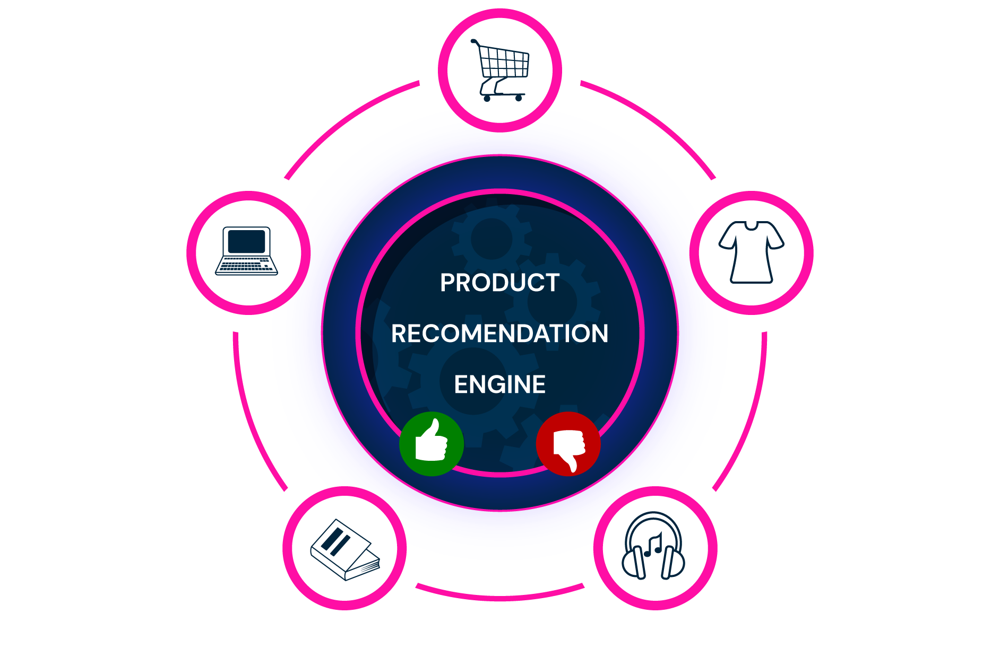

list_clients_purchases = [
("apple", "banana", "cherry"),
("banana", "date", "fig"),
("apple", "cherry", "kiwi"),
("grape", "kiwi", "date"),
("apple", "mango", "date"),
("banana", "grape", "mango"),
("apple", "date", "cherry", "kiwi"),
("banana", "grape"),
("date", "kiwi", "cherry"),
("apple", "banana", "mango", "grape")
]Recommendation System
Side Project for Extra Credit
Build a recommendation system that suggests products to a customer based on their purchases and the purchase histories of other customers. Here, a “new customer” means someone whose purchase history we want to make recommendations for; they may already have bought some products.
Main concepts: tuples, sets, dictionaries, loops, and frequency counts.

The data
Each tuple contains the products purchased by one existing customer. Treat each customer’s purchases as a set: buying the same product more than once should not give that customer extra weight.
Our rule is simple: consider only customers who share at least one purchase with the new customer. Among their remaining products, recommend those bought by the largest number of these customers.
Step 2: Find products the customer has not bought
Create find_new_products(client_purchases, new_client_purchases).
- Convert both tuples to sets.
- Use set difference to find the products the existing customer bought but the new customer did not.
- Return these products as a list, without duplicates.
For example, find_new_products(("apple", "banana"), ("apple", "date")) should return ["banana"]. The order does not matter when the result contains several products.
Step 3: Choose recommendations
Create recommend_products(list_clients_purchases, new_client_purchases).
- Create an empty list named
potential_recommendations. - Loop over the existing customers.
- Use
have_common_purchasesto check each customer. Only if they share a purchase, usefind_new_productsand add those products to your list. - Count how often each candidate product appears. A dictionary is useful here.
- Return a list of all products tied for the highest frequency. If there are no candidates, return an empty list.
The function should always return a list, even when there is only one recommendation. You may return tied products in any order. Never recommend a product the new customer already owns.
Step 4: Test and explain your system
Use the supplied data with this customer:
new_client = ("apple", "date")Your result should contain both "cherry" and "kiwi", in either order. Each appears in four qualifying customers’ purchase histories. Explain which customers contribute to these recommendations and how the counts lead to the tie.
Then design small tests for:
- Two products tied for the highest frequency.
- No shared purchases with any customer.
- Shared purchases, but no new products to recommend.
- An empty purchase history for the new customer.
For each test, write the expected result before running your code. Under our rule, an empty purchase history produces no recommendations. Explain why.
Stretch goals (optional)
- Extend the function to recommend the top three, or top
n, products. State how you handle ties at the cutoff. - Add a fallback for customers who receive no recommendations, such as the most popular products they do not already own. If no such products exist, return an empty list.
Before you submit
Upload your completed notebook to the Side Projects section on Blackboard before the final exam.
Include your functions, tests, saved outputs, and a short explanation of one limitation of this recommendation rule. Follow the notebook and AI-use guidance on the Side Projects page.